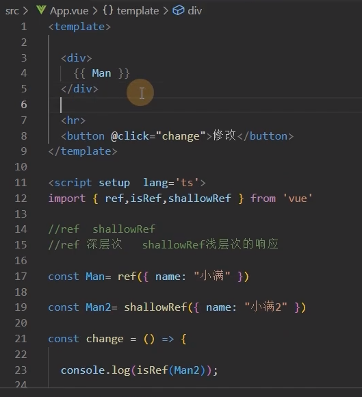
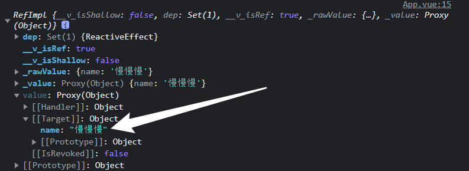
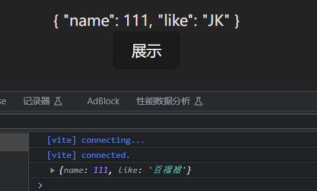
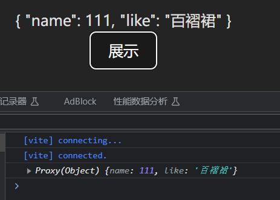
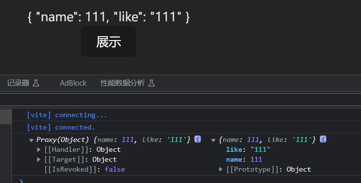
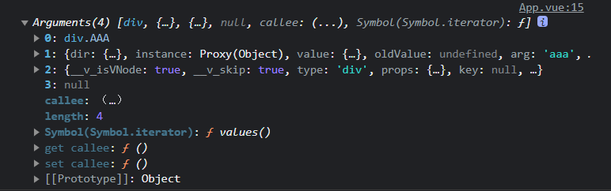
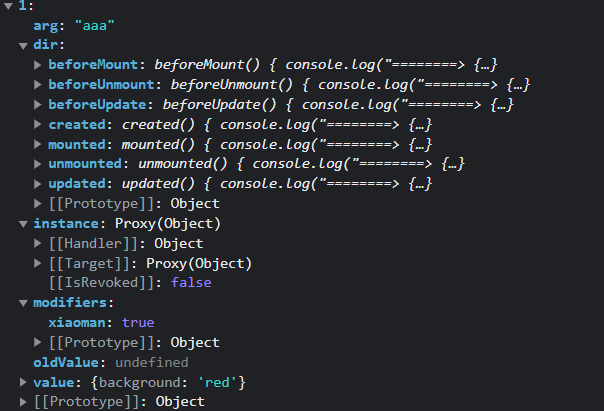

小满VUE
Vue3¶
数组更新检测¶
一些操作数组的方法，编译会检测，从而会促使视图更新。
-
变异方法
-
push() pop()shift()删除并返回第一个unshift()向开头添加多个元素，返回新长度splice()删除 / 删除并添加sort()reverse()
上面这些数组操作方法，会直接改变原始数组称为变异方法，会促使视图自动更新。
- 替换数组
学了 JavaScript 标准对象库，都知道有些数组方法是不直接改变原数组的，这里称它们为非变异方法，例如：filter()、slice()、concat()，它们都是返回一个新数组，那么，在 Vue 中使用到这些方法，怎么样才能促使视图更新呢？我们就必须使用数组替换法，将非变异方法返回的新数组直接赋值给的旧数组。
this.nav = this.nav.slice(1, 4);
- 注意
由于 JavaScript 的限制，Vue 不能检测以下变动的数组：
- 当你利用索引直接设置一个项时，例如：
vm.items[indexOfItem] = newValue。 - 当你修改数组的长度时，例如：
vm.items.length = newLength。
例子：
var app = new Vue({
data: {
items: ["a", "b", "c"],
},
});
app.items[1] = "x"; // 不是响应性的
app.items.length = 2; // 不是响应性的
上去直接这样改值操作是没有问题的，但是不是响应式的，并不能触发视图更新，需要用其他方法代替。
例如这样的操作 app.items[indexOfItem] = newValue ，可以用以下两种代替。
// Vue.set
Vue.set(vm.items, indexOfItem, newValue);
// Array.prototype.splice
vm.items.splice(indexOfItem, 1, newValue);
// 不加括号
<span v-for="number in oddNumber">{{number}}</span>
computed: {
// 计算 numberArray 中为奇数的 oddNumber 奇数数组
oddNumber: function () {
return this.numberArray.filter(function (number) {
return number % 2 === 1;
});
}
//加括号
<span v-for="number in getOddNumber()">{{number}}</span>
methods: {
// 定一个一个获取数组内奇数的方法 filter 数组对象的过滤方法
getOddNumber: function () {
return this.numberArray.filter(function (number) {
return number % 2 === 1;
});
},
}
表单处理¶
https://cn.vuejs.org/examples/#form-bindings
v-module¶
- 只适用于input标签
- 便捷地设置和获取表单元素的值
- 绑定的数据会和表单元素值相关联
- 绑定的数据 ↔ 表单元素的值：双向绑定
<div id="app">
import {ref} from 'vue'
<input type="text" v-model="message" />
</div>
let app=new Vue({
el: '#app',
data: {
message: "黑馬程序員"
}
})
常用表单元素¶
| 元素 | |
|---|---|
| input[type=*] | 文本输入框 |
| textarea | 多行文本 |
| radio | 单选按钮 |
| checkbox | 复选框 |
| select | 选择框 |
注意
注意一：v-model 会忽略所有表单元素的 value、checked、selected 特性的初始值而总是将 Vue 实例的数据作为数据来源。直接给元素 value 赋值不会生效的，你应该通过 JavaScript 在组件的 data 选项中声明初始值。
注意二：v-model 在内部使用不同的属性为不同的输入元素并抛出不同的事件，具体体现我们在表单 修饰符小节，给大家说明：
-
text 和 textarea 元素使用
value属性和input事件（内部监听 input 事件）； -
checkbox 和 radio 使用
checked属性和change事件（内部监听 change 事件）； -
select 字段将
value作为 prop 并将change作为事件（内部监听 change 事件）。
说明： change 和 input 区别就是，input 实时更新数据，change 不是实时更新
单选按钮¶
将单选按钮绑定到同一个 picked，即可完成数据绑定
当第一个单选被选中 picked 的值为第一个单选按钮的 value，
同样当第二个单选被选中 picked 的值为第二个单选按钮的 value。
<body>
<div id="app">
<!-- 将单选按钮绑定到同一个 picked -->
<input type="radio" id="one" value="One" v-model="picked" />
<label for="one">One</label>
<br />
<input type="radio" id="two" value="Two" v-model="picked" />
<label for="two">Two</label>
<br />
<span>Picked: {{ picked }}</span>
</div>
<script>
var vue = new Vue({
el: "#app",
data() {
return {
picked: "",
};
},
});
</script>
</body>
复选框¶
复选框绑定的是一个布尔值（true or false），同样在复选框元素上使用 v-model 指令，在实例 data 中声明 checked，即可完成复选框数据的双向绑定。
<body>
<div id="app">
<input type="checkbox" id="checkbox" v-model="checked" />
<label for="checkbox">{{ checked }}</label>
</div>
<script>
// 绑定布尔值
var vue = new Vue({
el: "#app",
data:{
checked: false,
},
});
</script>
</body>
v-module='check'表示
-
当选中时，把
check = value绑定 -
如果不存在
value，则check为布尔值
修饰符¶
lazy
开始介绍表单处理时，我们说了几点注意，不同的元素，使用的值不同，抛出的事件也不同。
可能开发中，我们不需要数据实时更新，那么，我们怎么将 input 事件与 change 事件替换，
可以使用 .lazy 修饰符，可以将抛出事件由 input 改为 change，使表单元素惰性更新，不实时更新。
<body>
<div id="app">
<!--使用 .lazy 修饰符将文本框 抛出的事件改为 change 事件，不再实时更新，只有文本框失去焦点才更新数据 惰性更新 -->
<input v-model.lazy="msg" />
<p>{{msg}}</p>
</div>
<script>
var vue = new Vue({
el: "#app",
data: {
msg: "hello",
},
});
</script>
</body>
只有文本框失去焦点才更新数据
number
自动将用户的输入值转为数值类型
即使在 type="number" 时，HTML 输入元素的值也会返回字符串（默认）
trim
过滤首尾空格
响应式修改¶

Ref全家桶¶
ref¶
<script lang='ts'>
export default {
data(){
return{
age:18
}
}
}
</script>
以前，只有age:18这样的才是响应式对象
<template>
<div>{{ Man }}</div>
<button @click="change"></button>
</template>
<script setup lang='ts'>
import { ref } from 'vue'
type M = {
name:string
}
const Man = ref<M>({ name: '小满' })
function change() {
Man.value.name = '慢慢慢'
console.log(Man);
}
</script>
<style scoped>
</style>
可以这样
ref()构造函数返回的对象有一个value属性，指向他的内部值

isRef¶
isRef(Man)：判断一个对象是不是ref对象
- isRef: 检查一个值是否为一个 ref 对象
- isReactive: 检查一个对象是否是由
reactive创建的响应式代理 - isReadonly: 检查一个对象是否是由
readonly创建的只读代理 - isProxy: 检查一个对象是否是由
reactive或者readonly方法创建的代理
shallowRef¶
<script setup lang='ts'>
import { shallowRef } from 'vue'
const Man = shallowRef({ name: '小满' })
function change() {
Man.value = {
name:'慢慢慢'
}
console.log(Man);
}
</script>
shallowRef是浅层的响应式，属性需要直接挂载到Man.value上，它的响应式只到.value上
（内部会更新，但不会响应式地渲染到页面上）
注意：ref和shallowRef不可以混写，否则会影响shallowRef，造成视图的更新
<script setup lang='ts'>
import { ref, shallowRef } from 'vue'
const Man = ref({ name: '小满' })
const Man2 = shallowRef({ name: '小满' })
function change() {
Man.value.name = '慢慢慢';
Man2.value = '慢慢慢';
console.log(Man);
console.log(Man2);
}
</script>
triggerRef¶
<script setup lang='ts'>
import { ref, shallowRef, triggerRef } from 'vue'
const Man2 = shallowRef({ name: '小满' })
function change() {
triggerRef(Man2);
Man2.value.name = '慢慢慢';
console.log(Man2);
}
</script>
triggerRef会强制更新shallowRef对象
customRef¶
-
自定义ref
-
customRef 是个工厂函数要求我们返回一个对象 并且实现 get 和 set 适合去做防抖之类的
<script setup lang='ts'>
import { ref, reactive, onMounted, shallowRef, customRef } from 'vue'
function myRef<T = any>(value: T) {
let timer:any;
return customRef((track, trigger) => {
return {
get() {
track()
return value
},
set(newVal) {
clearTimeout(timer)
timer = setTimeout(() => {
console.log('触发了set')
value = newVal
trigger()
},500)
}
}
})
}
const name = myRef<string>('小满')
const change = () => {
name.value = '大满'
}
</script>
模版引用¶
ref可以获取dom属性
<template>
<div ref="div">小满Ref</div>
<hr>
<div ref="dom">我是dom</div>
<hr>
<button @click="change">修改 customRef</button>
</template>
<script setup lang='ts'>
import { ref, reactive, onMounted, shallowRef, customRef } from 'vue'
const dom = ref<HTMLDivElement>()
const change = () => {
console.log(dom.value?.innerHTML);
}
</script>
<style scoped>
</style>
ref='name'和name=ref()的name要求一致
reactive全家桶¶
reactive¶
ref支持所有类型，reactive只支持引用类型ref取值赋值都需要通过.value，reactive不需要
<template>
<div>
<form>
<ul>
<li v-for="item in list">{{ item }}</li>
</ul>
<button @click.prevent="add">添加</button>
</form>
</div>
</template>
<script setup lang='ts'>
import {reactive} from 'vue'
let list = reactive<string[]>([])
const add = () => [
setTimeout(() => {
let res = ["EDG", 'REW'];
list = res;
console.log(list);
}, 2000)
]
</script>
<style scoped>
</style>
这样并不能把res的内容渲染到list里面。因为list是reactive proxy值，不能直接复制，否则会破坏响应式对象
但是可以push：
list.push(..res)
readonly¶
<script setup lang='ts'>
import {reactive, readonly} from 'vue'
let obj = reactive({ name: '小满' });
const read = readonly(obj)
// read.name='sss' // 无法为“name”赋值，因为它是只读属性。
</script>
这样可以改变readonly对象的属性
<script setup lang='ts'>
import {reactive, readonly} from 'vue'
let obj = reactive({ name: '小满' });
const read = readonly(obj)
// read.name='sss'
const show = () => {
obj.name = 'sss';
console.log(obj, read);
}
</script>
shallowReactive¶
浅层的Reactive：
<template>
<div>
<form>
<div>{{ obj }}</div>
<button @click.prevent="show">展示</button>
</form>
</div>
</template>
<script setup lang='ts'>
import {reactive, readonly, shallowReactive} from 'vue'
let obj = shallowReactive({
name: {
value: {
key: 1
}
}
})
const show = () => {
obj.name.value.key = 1111;
console.log(obj);
}
</script>
<style scoped>
</style>
shallowReactive也会被Reactive修改
to系列全家桶¶
toRef¶
<template>
<div>
<form>
<div>{{ obj }}</div>
<button @click.prevent="change">展示</button>
</form>
</div>
</template>
<script setup lang='ts'>
import {reactive, readonly, shallowReactive} from 'vue'
let obj = {name:111}
const change = () => {
obj.name = 12334;
console.log(obj);
}
</script>
<style scoped>
</style>
这样只能修改值，修改不了视图，不是响应式的
<script setup lang='ts'>
import {reactive, readonly, shallowReactive, toRef} from 'vue'
let obj = { name: 111, like:'JK' }
let like = toRef(obj, 'like'); // toRef应该这样使用
const change = () => {
like.value = '百褶裙'; // 要加value才能访问属性
console.log(obj);
}
</script>
这样也不行，因为toRef只能用给响应式对象：

这样是正确的
<script setup lang='ts'>
import {reactive, readonly, shallowReactive, toRef} from 'vue'
let obj = reactive({ name: 111, like: 'JK' });
let like = toRef(obj, 'like');
const change = () => {
like.value = '百褶裙';
console.log(obj);
}
</script>

toRefs¶
对每个属性都调用一遍toRef
手动实现：
const toRefs = <T extends object>(object: T) => {
const map: any = {};
for (let key in object) {
map[key]=toRef(object, key)
}
return map;
}
toRaw¶
脱去代理
console.log(obj, toRaw(obj));

计算属性¶
计算属性就是当依赖的属性的值发生变化的时候，才会触发他的更改，如果依赖的值，不发生变化的时候，使用的是缓存中的属性值。
在script中访问时要加上.value
- 函数形式（常用，只设置setter）
import { computed, reactive, ref } from 'vue'
let price = ref(0)//$0
let m = computed<string>(()=>{
return `$` + price.value
})
price.value = 500
- 对象形式
<template>
<div>{{ mul }}</div>
<div @click="mul = 100">click</div>
</template>
<script setup lang="ts">
import { computed, ref } from 'vue'
let price = ref<number | string>(1)//$0
let mul = computed({
get: () => {
return price.value
},
set: (value) => {
price.value = 'set' + value
}
})
</script>
<style>
</style>
侦听属性¶
watch¶
watch 需要侦听特定的数据源，并在单独的回调函数中执行副作用
-
watch第一个参数监听源
-
watch第二个参数回调函数cb（newVal,oldVal）
-
watch第三个参数一个options配置项是一个对象：
{
immediate:true //是否立即调用一次
deep:true //是否开启深度监听
}
- 默认是浅层监听
实例：
监听一个¶
import { ref, watch } from 'vue'
let message = ref({
nav:{
bar:{
name:""
}
}
})
watch(message, (newVal, oldVal) => {
console.log('新的值----', newVal);
console.log('旧的值----', oldVal);
},{
immediate:true,
deep:true
})
监听多个：¶
import { ref, watch ,reactive} from 'vue'
let message = ref('')
let message2 = ref('')
watch([message,message2], (newVal, oldVal) => {
console.log('新的值----', newVal);
console.log('旧的值----', oldVal);
})
监听Reactive¶
使用reactive监听深层对象开启和不开启deep 效果一样
import { ref, watch ,reactive} from 'vue'
let message = reactive({
nav:{
bar:{
name:""
}
}
})
watch(message, (newVal, oldVal) => {
console.log('新的值----', newVal);
console.log('旧的值----', oldVal);
})
只监听reactive的一个值¶
需要是一个函数的返回值
import { ref, watch ,reactive} from 'vue'
let message = reactive({
name:"",
name2:""
})
watch(()=>message.name, (newVal, oldVal) => {
console.log('新的值----', newVal);
console.log('旧的值----', oldVal);
})
watchEffect¶
（页面加载的时候会立即执行一次）
立即执行传入的一个函数，同时响应式追踪其依赖，并在其依赖变更时重新运行该函数。
如果用到message 就只会监听message 就是用到几个监听几个 而且是非惰性 会默认调用一次
let message = ref<string>('')
let message2 = ref<string>('')
watchEffect(() => {
//console.log('message', message.value);
console.log('message2', message2.value);
})
组件&生命周期¶
引入：
import A form './components/aaa.vue'
A可以为任意名称
使用：
<template>
<A></A>
<A></A>
</template>
生命周期：
-
在setup语法糖模式下，没有
before、created这两个生命周期，可以用setup代替 -
onBeforeMount() 在组件DOM实际渲染安装之前调用。在这一步中，根元素还不存在。
-
onMounted() 在组件的第一次渲染后调用，该元素现在可用，允许直接DOM访问
v-if会触发这两个，但v-show不会 -
onBeforeUpdate() 数据更新时调用，发生在虚拟 DOM 打补丁之前。
-
onUpdated() DOM更新后，updated的方法即会调用。
-
onBeforeUnmount() 在卸载组件实例之前调用。在这个阶段，实例仍然是完全正常的。
-
onUnmounted() 卸载组件实例后调用。调用此钩子时，组件实例的所有指令都被解除绑定，所有事件侦听器都被移除，所有子组件实例被卸载。
实操组件和认识less sass 和 scoped¶
bem架构：
他是一种css架构 oocss 实现的一种 （面向对象css） ，BEM实际上是block、element、modifier的缩写，分别为块层、元素层、修饰符层，element UI 也使用的是这种架构
BEM 命名约定的模式是：
.block {}
.block__element {}
.block--modifier {}
使用sass 最小单元复刻一个bem 架构（写在./src/bem.scss中）：
$block-sel: "-" !default;
$element-sel: "__" !default;
$modifier-sel: "--" !default;
$namespace:'xm' !default;
@mixin bfc {
height: 100%;
overflow: hidden;
}
//混入
@mixin b($block) {
$B: $namespace + $block-sel + $block; //变量
.#{$B}{ //插值语法#{}
@content; //内容替换
}
}
@mixin flex {
display: flex;
}
@mixin e($element) {
$selector:&;
@at-root {
#{$selector + $element-sel + $element} {
@content;
}
}
}
@mixin m($modifier) {
$selector:&;
@at-root {
#{$selector + $modifier-sel + $modifier} {
@content;
}
}
}
全局扩充scss，（在./vite/config.ts文件中）：
import { defineConfig } from 'vite'
import vue from '@vitejs/plugin-vue'
// https://vitejs.dev/config/
export default defineConfig({
plugins: [vue()],
css: {
preprocessorOptions: {
scss: {
additionalData: "@import './src/bem.scss';"
}
}
}
})
父子组件传参¶
父传子¶
-
父组件用
v-bind也就是:，把这个写在template中子组件的标签上 -
子组件用
defineProps接收，有三种写法。
defineProps 接收与 props 选项相同的值，defineEmits 接收与 emits 选项相同的值。
// 非setup
// 第一种数组方式
props: [xxx, xxx, xxx]
// 第二种对象方式
props: { xxx: Number, xxx: String}
// 第三种对象嵌套对象方式
props: {
xxx: {
//类型不匹配会警告
type: Number,
default: 0,
required: true,
// 返回值不是 true,会警告
validator(val) { return val === 10}
}
}
父组件发送：
直接使用v-bind:
<template>
<waterFall :title="name"> </waterFall>
</template>
<script setup lang='ts'>
import waterFall from "./components/water-fall.vue";
let name='小满'
</script>
<style scoped></style>
子组件接收：
<template>
<div>子集</div>
<div>值：{{ title }}</div>
</template>
<script setup lang="ts">
import { ref, reactive } from 'vue';
const props = defineProps({
title: {
type: String,
default: "默认值"
},
// 对象或数组的默认值，须从一个工厂函数返回。
// 该函数接收组件所接收到的原始 prop 作为参数
imageList:{
type:Array,
default:()=>[]
}
})
console.log(props.title);
</script>
<style scoped lang="scss">
</style>
可以在template中直接使用，但在script中使用时，要加上props.
使用ts写法：
import { ref, reactive } from 'vue';
withDefaults(defineProps<{
title: string,
arr:number[]
}>(), {
arr: ()=>[666]
})
子传父¶
- 传递**事件**
- 父组件使用
@给子组件绑定事件 - 子组件使用
defineEmits接收一个事件数组 - 结果：子组件可以调用父组件的函数
子：
<template>
<div>子集</div>
<button @click="send">给父组件传值</button>
</template>
<script setup lang="ts">
const emit=defineEmits(['on-click'])
const send = () => {
emit('on-click', '小满')
}
</script>
<style scoped lang="scss">
</style>
使用ts：
const emit = defineEmits<{
(e:'on-click', name:string):void
}>()
const send = () => {
emit('on-click', '小满')
}
父：
<template>
<waterFall @on-click="getName"> </waterFall>
</template>
<script setup lang='ts'>
import waterFall from "./components/water-fall.vue";
const getName = (name: string) => {
console.log(name, '========>我是父组件');
}
</script>
<style scoped>
</style>
子组件变量暴露给父组件¶
父组件：
<template>
<waterFallVue ref="waterFall"> </waterFallVue>
</template>
<script setup lang='ts'>
import { ref } from "vue";
import waterFallVue from "./components/water-fall.vue";
const waterFall = ref<InstanceType<typeof waterFallVue>>() // 获取dom
console.log(waterFall.value?.list);
</script>
<style scoped>
</style>
子组件：
<template>
<div>子集</div>
</template>
<script setup lang="ts">
import { reactive } from 'vue';
const list = reactive<number[]>([4, 5, 6])
defineExpose({
list
})
</script>
<style scoped lang="scss">
</style>
全局组件，局部组件，递归组件¶
注册全局组件：¶
// ./src/main.ts
import { createApp } from 'vue'
import './style.css'
import App from './App.vue'
import waterFull from "./components/water-fall.vue";
export const app = createApp(App);
app.component('water-full',waterFull);
app.mount('#app');
小兔鲜：
components/index.js
import ImageView from './ImageView/index.vue'
import Sku from './XtxSku/index.vue';
export const componentPlugin={
install(app){
app.component('XtxImageView', ImageView)
app.component('XtxSku', Sku)
}
}
main.js
import { componentPlugin } from "@/components/index";
app.use(componentPlugin)
注册完毕后，可以在其他地方使用，无需引入
递归组件¶
<template>
<div class="tree" v-for="item in data">
<input type="checkbox"> <span>{{ item.name }}</span>
<Tree v-if="item?.children?.length" :data="item.children"></Tree>
</div>
</template>
Tree可以是当前文件名
动态组件¶
<template>
<div style="display: flex;">
<div @click="switchCom(item, index)" :class="{'active': active==index}" class="tabs" v-for="(item, index) in data">
<div>{{ item.name }}</div>
</div>
</div>
</template>
<script setup lang='ts'>
import { ref, reactive } from 'vue';
import AVue from './components/HelloWorld.vue';
import BVue from './components/HelloWorld.vue';
import CVue from './components/HelloWorld.vue';
const comId = ref(AVue);
const active = ref(0);
const data = reactive([
{
name: 'A组件',
com:AVue
},
{
name: 'B组件',
com:BVue
},
{
name: 'C组件',
com:CVue
},
]);
const switchCom = (item, index) => {
comId.value = item.com;
active.value = index;
}
</script>
<style scoped>
</style>
性能优化
const tab = reactive<Com[]>([{
name: "A组件",
comName: markRaw(A)
}, {
name: "B组件",
comName: markRaw(B)
}])
插槽slot¶
匿名插槽¶
在子组件放置一个插槽
<template>
<div>
<slot></slot>
</div>
</template>
父组件使用插槽
在父组件给这个插槽填充内容
<Dialog>
<template v-slot>
<div>2132</div>
</template>
</Dialog>
具名插槽¶
具名插槽其实就是给插槽取个名字。一个子组件可以放多个插槽，而且可以放在不同的地方，而父组件填充内容时，可以根据这个名字把内容填充到对应插槽中
- 匿名插槽的名字是
default
<div>
<slot name="header"></slot>
<slot></slot>
<slot name="footer"></slot>
</div>
父组件使用需对应名称
<Dialog>
<template v-slot:header>
<div>1</div>
</template>
<template v-slot>
<div>2</div>
</template>
<template v-slot:footer>
<div>3</div>
</template>
</Dialog>
作用域插槽¶
- 普通插槽只能使用父组件的数据
- 我们让子组件在渲染时将一部分数据提供给插槽，作用域插槽可以使用子组件的数据
在子组件动态绑定参数 派发给父组件的slot去使用
<div>
<slot name="header"></slot>
<div>
<div v-for="item in 100">
<slot :data="item"></slot> // ":data"是传给父组件的参数
</div>
</div>
<slot name="footer"></slot>
</div>
通过解构方式取值
(v-slot有对应的简写: #)
<Dialog>
<template #header>
<div>1</div>
</template>
<template #default="{ data }">
<div>{{ data }}</div>
</template>
<template #footer>
<div>3</div>
</template>
</Dialog>
简写：
<Dialog>
<template #header>
<div>1</div>
</template>
<template #default>
<div>2</div>
</template>
<template #footer>
<div>3</div>
</template>
</Dialog>
动态插槽¶
插槽可以是一个变量名
<template>
<Dialog>
<template #[name]>
<div>23</div>
</template>
</Dialog>
</template>
<script>
const name = ref('header')
</script>
内置组件¶
Teleport传送组件¶
[小满(https://xiaoman.blog.csdn.net/article/details/122916261)
Teleport 是一种能够将我们的模板渲染至指定DOM节点，不受父级style、v-show等属性影响，但data、prop数据依旧能够共用的技术；类似于 React 的 Portal。
主要解决的问题 因为Teleport节点挂载在其他指定的DOM节点下，完全不受父级style样式影响使用方法
通过to 属性 插入指定元素位置 to="body" 便可以将Teleport 内容传送到指定位置
也可以自定义传送位置 支持 class id等 选择器
keep-alive缓存组件¶
<keep-alive :include="['A', 'B']" :exclude="['C', 'D']" :max=""></keep-alive>
include：要缓存的组件exclude：不缓存的组件max：缓存组件的最大数量，LRU算法
生命周期
onMounted(() => {
console.log('初始化'); //只做一次
})
onActivated(() => {
console.log('keep-alive初始化'); //每次切换时和第一次注册时都做
})
onDeactivated(() => {
console.log('keep-alive卸载'); //每次切换时都做
})
onUnmounted(() => {
console.log('卸载'); //不做
})
transition 过渡组件¶
Vue 提供了 transition 的封装组件，在下列情形中，可以给任何元素和组件添加进入/离开过渡:
- 条件渲染 (使用 v-if)
- 条件展示 (使用 v-show)
- 动态组件
- 组件根节点
自定义 transition 过度效果，你需要对transition组件的name属性自定义。并在css中写入对应的样式
在进入/离开的过渡中，会有 6 个 class 切换，下面的v代表template中name的值
- v-enter-from：定义进入过渡的开始状态。在元素被插入之前生效，在元素被插入之后的下一帧移除。
- v-enter-active：定义进入过渡生效时的状态。在整个进入过渡的阶段中应用，在元素被插入之前生效，在过渡/动画完成之后移除。这个类可以被用来定义进入过渡的过程时间，延迟和曲线函数。
- v-enter-to：定义进入过渡的结束状态。在元素被插入之后下一帧生效 (与此同时 v-enter-from 被移除)，在过渡/动画完成之后移除。
- v-leave-from：定义离开过渡的开始状态。在离开过渡被触发时立刻生效，下一帧被移除。
- v-leave-active：定义离开过渡生效时的状态。在整个离开过渡的阶段中应用，在离开过渡被触发时立刻生效，在过渡/动画完成之后移除。这个类可以被用来定义离开过渡的过程时间，延迟和曲线函数。
- v-leave-to：离开过渡的结束状态。在离开过渡被触发之后下一帧生效 (与此同时 v-leave-from 被移除)，在过渡/动画完成之后移除。
示例：
//开始过度
.fade-enter-from{
background:red;
width:0px;
height:0px;
transform:rotate(360deg)
}
//开始过度了
.fade-enter-active{
transition: all 2.5s linear;
}
//过度完成
.fade-enter-to{
background:yellow;
width:200px;
height:200px;
}
//离开的过度
.fade-leave-from{
width:200px;
height:200px;
transform:rotate(360deg)
}
//离开中过度
.fade-leave-active{
transition: all 1s linear;
}
//离开完成
.fade-leave-to{
width:0px;
height:0px;
}
依赖注入Provide / Inject¶
- 注册一个变量，可以全局使用
- 顶层组件向任意的底层组件传递数据和方法，实现跨层组件通信
- 顶层组件：
provide('key',value) - 底层组件：
const message=inject('key')

<template>
<h1>app.vue</h1>
<label>
<input v-model="colorVal" value='red' name="color" type="radio"> 红色
</label>
<label>
<input v-model="colorVal" value='pink' name="color" type="radio"> 粉色
</label>
<label>
<input v-model="colorVal" value='green' name="color" type="radio"> 绿色
</label>
<div class="box"></div>
<hr>
<vueA></vueA>
</template>
<script setup lang='ts'>
import { provide, ref } from 'vue';
import vueA from './components/providea.vue'
const colorVal=ref<string>('red')
provide('color', colorVal)
</script>
<style scoped>
.box{
width: 100px;
height: 100px;
background-color: v-bind(colorVal);
}
</style>
<template>
<div></div>
<hr>
<vueB></vueB>
</template>
<script setup lang='ts'>
import type{Ref} from 'vue'
import { inject} from 'vue'
import vueB from './provideb.vue'
const color = inject<Ref<string>>('color')
</script>
<style scoped>
div{
width: 100px;
height: 100px;
background-color: v-bind(color);
}
</style>
<template>
<div></div>
<button @click="change(111)">绿！</button>
</template>
<script setup lang='ts'>
import { inject } from "vue";
import type { Ref } from 'vue';
const color=inject<Ref<string>>('color')
const change = (num: number)=>{
console.log(num);
color!.value='green'
}
</script>
<style scoped>
div{
width: 100px;
height: 100px;
background-color: v-bind(color);
}
</style>
兄弟组件传参和bus¶
借助父组件¶
<template>
<div>
<A @on-click="getFalg"></A>
<B :flag="Flag"></B>
</div>
</template>
<script setup lang='ts'>
import A from './components/A.vue'
import B from './components/B.vue'
import { ref } from 'vue'
let Flag = ref<boolean>(false)
const getFalg = (flag: boolean) => {
Flag.value = flag;
}
</script>
<style>
</style>
A 组件派发事件通过App.vue 接受A组件派发的事件然后在Props 传给B组件 也是可以实现的
缺点就是比较麻烦 ，无法直接通信，只能充当桥梁
Event Bus¶
我们在Vue2可以使用 $emit 传递 $on监听 emit传递过来的事件
这个原理其实是运用了JS设计模式之发布订阅模式
我写了一个简易版
type BusClass<T> = {
emit: (name: T) => void
on: (name: T, callback: Function) => void
}
type BusParams = string | number | symbol
type List = {
[key: BusParams]: Array<Function>
}
class Bus<T extends BusParams> implements BusClass<T> {
list: List
constructor() {
this.list = {}
}
emit(name: T, ...args: Array<any>) {
let eventName: Array<Function> = this.list[name]
eventName.forEach(ev => {
ev.apply(this, args)
})
}
on(name: T, callback: Function) {
let fn: Array<Function> = this.list[name] || [];
fn.push(callback)
this.list[name] = fn
}
}
export default new Bus<number>()
mitt库¶
https://xiaoman.blog.csdn.net/article/details/125453908
- 安装
npm install mitt -S
- main.ts 初始化 全局总线，vue 入口文件 main.js 中挂载全局属性
import { createApp } from 'vue'
import App from './App.vue'
import mitt from 'mitt'
const Mit = mitt()
//TypeScript注册
// 由于必须要拓展ComponentCustomProperties类型才能获得类型提示
declare module "vue" {
export interface ComponentCustomProperties {
$Bus: typeof Mit
}
}
const app = createApp(App)
//Vue3挂载全局API
app.config.globalProperties.$Bus = Mit
app.mount('#app')
TSX¶
https://xiaoman.blog.csdn.net/article/details/123172735
JSX本身是一种JavaScript的语法扩展，用于在JavaScript代码中编写类似于HTML的结构。它通常与React一起使用，用于构建用户界面。
TSX是指"TypeScript JSX"，是一种使用TypeScript编写的JavaScript的扩展语法。
vite.config.ts配置：
import { defineConfig } from 'vite'
import vue from '@vitejs/plugin-vue'
import vueJsx from '@vitejs/plugin-vue-jsx'
// https://vitejs.dev/config/
export default defineConfig({
plugins: [vue(), vueJsx()],
css: {
preprocessorOptions: {
scss: {
additionalData: "@import './src/bem.scss';"
}
}
}
})
App.vue:
<template>
<div>
<xiaoman></xiaoman>
</div>
</template>
<script setup lang='ts'>
import xiaoman from './App.tsx'
</script>
<style scoped>
</style>
App.tsx第一种写法：
// App.tsx
export default function () {
return (<div>小满</div>)
}
另一种：
// 返回一个渲染函数
import { defineComponent } from "vue"
export default defineComponent({
data() {
return {
age: 23
}
},
render() {
return (<div>{ this.age }</div>)
}
})
第三种：
// 返回一个渲染函数
// optionsAPI
import { defineComponent } from "vue"
export default defineComponent({
setup() {
return () => <div>hello</div>
},
})
TIPS tsx不会自动解包，使用ref也要加.vlaue ! ! !
-
tsx支持
v-model和v-show的使用 -
v-if不支持 -
v-for不支持（可以用.map() 模拟）
import { ref } from 'vue'
let arr = [1,2,3,4,5]
const renderDom = () => {
return (
<>
{
arr.map(v=>{
return <div>${v}</div>
})
}
</>
)
}
export default renderDom
v-bind使用：
直接赋值即可
import { ref } from 'vue'
let arr = [1, 2, 3, 4, 5]
const renderDom = () => {
return (
<>
<div data-arr={arr}>1</div>
</>
)
}
export default renderDom
-
v-on绑定事件 所有的事件都按照react风格来
-
所有事件有on开头
- 所有事件名称首字母大写
const renderDom = () => {
return (
<>
<button onClick={clickTap}>点击</button>
</>
)
}
const clickTap = () => {
console.log('click');
}
export default renderDom
directive自定义指令¶
js图片懒加载¶
main.js
import { createApp } from 'vue'
import { createPinia } from 'pinia'
import App from './App.vue'
import router from './router'
import '@/styles/common.scss';
import { useIntersectionObserver } from '@vueuse/core'
const app = createApp(App)
app.use(createPinia())
app.use(router)
app.mount('#app')
app.directive('img-lazy', {
mounted(el, binding) {
// console.log(el, binding.value);
useIntersectionObserver(el, ([{ isIntersecting }]) => {
if (isIntersecting) {
el.src = binding.value
console.log(11111);
}
})
}
})
需要在main.js中注册：
import { lazyPlugin } from '@/directives';
app.use(lazyPlugin)
App.vue
<img v-img-lazy="item.picture" alt="" />
// binding.value=item.picture
v-img-lazy就是自定义的指令- 这个指令有生命周期钩子
- 生命周期钩子接收两个参数
el是dom对象bing.value是等于号后面绑定的表达式的值图片url
插件化：
directive/index.js
import { useIntersectionObserver } from '@vueuse/core'
export const lazyPlugin = {
install(app) {
app.directive('img-lazy', {
mounted(el, binding) {
// console.log(el, binding.value);
useIntersectionObserver(el, ([{ isIntersecting }]) => {
if (isIntersecting) {
el.src = binding.value
console.log(11111);
stop() // 由于useIntersectionObserver的特性，加上这个才会只请求一次
}
})
}
})
}
}
main.js
import { createApp } from 'vue'
import { createPinia } from 'pinia'
import App from './App.vue'
import router from './router'
import '@/styles/common.scss';
import { lazyPlugin } from '@/directives';
const app = createApp(App)
app.use(createPinia())
app.use(router)
app.use(lazyPlugin)
app.mount('#app')
ts:
样例简介¶
<template>
<div>
<button>切换</button>
<A v-move:aaa.xiaoman="{background: 'red'}"></A>
</div>
</template>
<script setup lang='ts'>
import A from './components/A.vue'
import { ref, Directive, DirectiveBinding } from 'vue'
let flag = ref<boolean>(true)
const vMove: Directive = {
created() {
console.log('========> created');
console.log(arguments);
},
beforeMount() {
console.log('========> created');
console.log(arguments);
},
mounted() {
console.log('========> created');
console.log(arguments);
},
beforeUpdate() {
console.log('========> created');
console.log(arguments);
},
updated() {
console.log('========> created');
console.log(arguments);
},
beforeUnmount() {
console.log('========> created');
console.log(arguments);
},
unmounted() {
console.log('========> created');
console.log(arguments);
},
}
</script>
<style scoped>
</style>
A.vue
<template>
<div class="AAA"></div>
</template>
<script setup lang='ts'>
</script>
<style scoped>
div{
width: 100px;
height: 100px;
background-color: #888;
}
</style>
输出：

-
div.AAA是子组件的选择器el，类型：HTMLElement -

类型：DirectiveBinding，传过来的参数:
- instance：使用指令的组件实例。
- value：传递给指令的值。例如，在 v-my-directive="1 + 1" 中，该值为 2。
- oldValue：先前的值，仅在 beforeUpdate 和 updated 中可用。无论值是否有更改都可用。
- arg：传递给指令的参数(如果有的话)。例如在 v-my-directive:foo 中，arg 为 "foo"。
- modifiers：包含修饰符(如果有的话) 的对象。例如在 v-my-directive.foo.bar 中，修饰符对象为 {foo: true，bar: true}。
-
dir：一个对象，在注册指令时作为参数传递。例如，在以下指令中
-
当前组件的
v-node，虚拟dom -
prevode，上一个虚拟dom
函数简写¶
可能想在 mounted 和 updated 时触发相同行为，而不关心其他的钩子函数。那么你可以通过将这个函数模式实现
<template>
<div class="btns">
<button v-has-show="'shop:create'">创建</button>
<button v-has-show="'shop:edit'">编辑</button>
<button v-has-show="'shop:delete'">删除</button>
</div>
</template>
<script setup lang='ts'>
import { ref, reactive, } from 'vue'
import type {Directive} from 'vue'
//permission
localStorage.setItem('userId','xiaoman-zs')
//mock后台返回的数据
const permission = [
'xiaoman-zs:shop:edit',
'xiaoman-zs:shop:create',
'xiaoman-zs:shop:delete'
]
const userId = localStorage.getItem('userId') as string
const vHasShow:Directive<HTMLElement,string> = (el,bingding) => {
if(!permission.includes(userId+':'+ bingding.value)){
el.style.display = 'none'
}
}
</script>
<style scoped lang='less'>
.btns{
button{
margin: 10px;
}
}
</style>
图片懒加载¶
<template>
<div>
<div v-for="item in arr">
<img height="500" :data-index="item" v-lazy="item" width="360" alt="">
</div>
</div>
</template>
<script setup lang='ts'>
import { ref, reactive } from 'vue'
import type { Directive } from 'vue'
const images: Record<string, { default: string }> = import.meta.globEager('./assets/images/*.*')
let arr = Object.values(images).map(v => v.default)
let vLazy: Directive<HTMLImageElement, string> = async (el, binding) => {
let url = await import('./assets/vue.svg')
el.src = url.default;
let observer = new IntersectionObserver((entries) => {
console.log(entries[0], el)
if (entries[0].intersectionRatio > 0 && entries[0].isIntersecting) {
setTimeout(() => {
el.src = binding.value;
observer.unobserve(el)
}, 2000)
}
})
observer.observe(el)
}
</script>
<style scoped lang='less'></style>
自定义attrs / hooks¶
https://xiaoman.blog.csdn.net/article/details/123271189
主要用来处理复用代码逻辑的一些封装
这个在vue2 就已经有一个东西是**Mixins**
mixins就是将这些多个相同的逻辑抽离出来，各个组件只需要引入mixins，就能实现一次写代码，多组件受益的效果。
弊端就是 会涉及到覆盖的问题
组件的data、methods、filters会覆盖mixins里的同名data、methods、filters。
自定义attrs¶
<template>
<A a="111" b.ccc="cscacsa"></A>
</template>
<script setup lang='ts'>
import A from './components/A.vue'
</script>
<style scoped>
</style>
<template>
</template>
<script setup lang='ts'>
import {useAttrs} from 'vue';
let attr = useAttrs()
console.log(attr.a);
</script>
<style scoped>
</style>
自定义hooks¶
图片转base64
import { onMounted } from 'vue'
type Options = {
el: string
}
type Return = {
Baseurl: string | null
}
export default function (option: Options): Promise<Return> {
return new Promise((resolve) => {
onMounted(() => {
const file: HTMLImageElement = document.querySelector(option.el) as HTMLImageElement;
file.onload = ():void => {
resolve({
Baseurl: toBase64(file)
})
}
})
const toBase64 = (el: HTMLImageElement): string => {
const canvas: HTMLCanvasElement = document.createElement('canvas')
const ctx = canvas.getContext('2d') as CanvasRenderingContext2D
canvas.width = el.width
canvas.height = el.height
ctx.drawImage(el, 0, 0, canvas.width,canvas.height)
console.log(el.width);
return canvas.toDataURL('image/png')
}
})
}
全局函数和变量¶
App.vue
<template>
<div>{{ $env }}</div>
<div>{{ $filters.format('的飞机') }}</div>
</template>
<script setup lang='ts'>
import { ref, reactive, getCurrentInstance } from 'vue';
const app = getCurrentInstance()
console.log(app?.proxy.$env);
</script>
<style scoped>
</style>
main.ts
import { createApp } from 'vue'
import App from './App.vue'
export const app = createApp(App)
app.config.globalProperties.$env = 'dev';
app.config.globalProperties.$filters = {
format<T>(str: T) {
return `小满-${str}`
}
}
app.mount('#app')
消除报错版¶
import { createApp } from 'vue'
import App from './App.vue'
export const app = createApp(App)
app.config.globalProperties.$env = 'dev';
app.config.globalProperties.$filters = {
format<T>(str: T) {
return `小满-${str}`
}
}
type Filter = {
format<T>(str: T): string
}
// 声明要扩充@vue/runtime-core包的声明.
// 这里扩充"ComponentCustomProperties"接口, 因为他是vue3中实例的属性的类型.
declare module 'vue' {
export interface ComponentCustomProperties {
$filters: Filter,
$env: string
}
}
app.mount('#app')
新的组件¶
1.Fragment¶
- 在Vue2中: 组件必须有一个根标签
- 在Vue3中: 组件可以没有根标签, 内部会将多个标签包含在一个Fragment虚拟元素中
- 好处: 减少标签层级, 减小内存占用
2.Teleport¶
- 什么是Teleport？——
Teleport是一种能够将我们的组件html结构移动到指定位置的技术。
<teleport to="移动位置">
<div v-if="isShow" class="mask">
<div class="dialog">
<h3>我是一个弹窗</h3>
<button @click="isShow = false">关闭弹窗</button>
</div>
</div>
</teleport>
3.Suspense¶
-
等待异步组件时渲染一些额外内容，让应用有更好的用户体验
-
使用步骤：
-
异步引入组件
import {defineAsyncComponent} from 'vue' const Child = defineAsyncComponent(()=>import('./components/Child.vue')) -
使用
Suspense包裹组件，并配置好default与fallback<template> <div class="app"> <h3>我是App组件</h3> <Suspense> <template v-slot:default> <Child/> </template> <template v-slot:fallback> <h3>加载中.....</h3> </template> </Suspense> </div> </template>
其他vue3新特性¶
1.全局API的转移¶
-
Vue 2.x 有许多全局 API 和配置。
-
例如：注册全局组件、注册全局指令等。
//注册全局组件 Vue.component('MyButton', { data: () => ({ count: 0 }), template: '<button @click="count++">Clicked {{ count }} times.</button>' }) //注册全局指令 Vue.directive('focus', { inserted: el => el.focus() } -
Vue3.0中对这些API做出了调整：
-
将全局的API，即：
Vue.xxx调整到应用实例（app）上2.x 全局 API（ Vue）3.x 实例 API ( app)Vue.config.xxxx app.config.xxxx Vue.config.productionTip 移除 Vue.component app.component Vue.directive app.directive Vue.mixin app.mixin Vue.use app.use Vue.prototype app.config.globalProperties
2.其他改变¶
-
data选项应始终被声明为一个函数。
-
过度类名的更改：
-
Vue2.x写法
.v-enter, .v-leave-to { opacity: 0; } .v-leave, .v-enter-to { opacity: 1; } -
Vue3.x写法
.v-enter-from, .v-leave-to { opacity: 0; } .v-leave-from, .v-enter-to { opacity: 1; } -
移除keyCode作为 v-on 的修饰符，同时也不再支持
config.keyCodes -
移除
v-on.native修饰符 -
父组件中绑定事件
<my-component v-on:close="handleComponentEvent" v-on:click="handleNativeClickEvent" /> -
子组件中声明自定义事件
<script> export default { emits: ['close'] } </script> -
移除过滤器（filter）
过滤器虽然这看起来很方便，但它需要一个自定义语法，打破大括号内表达式是 “只是 JavaScript” 的假设，这不仅有学习成本，而且有实现成本！建议用方法调用或计算属性去替换过滤器。
- ......
CSS特性¶
插槽选择器：¶
A.vue
<template>
<div>
我是插槽
<slot></slot>
</div>
</template>
<script setup lang='ts'>
</script>
<style scoped>
:slot(.a){
color: pink;
}
</style>
App.vue
<template>
<div>
<A>
<div class="a">私人定制div</div>
</A>
</div>
</template>
<script setup lang='ts'>
import A from "@/components/A.vue";
</script>
<style scoped></style>
全局选择器¶
<style>
div{
color:red
}
</style>
<style lang="less" scoped>
</style>
<style lang="less" scoped>
:global(div){
color:red
}
</style>
动态选择器
<template>
<div class="div">
小满是个弟弟
</div>
</template>
<script lang="ts" setup>
import { ref } from 'vue'
const red = ref<string>('red')
</script>
<style lang="less" scoped>
.div{
color:v-bind(red)
}
</style>
如果是对象 v-bind 请加引号
<template>
<div class="div">
小满是个弟弟
</div>
</template>
<script lang="ts" setup>
import { ref } from "vue"
const red = ref({
color:'pink'
})
</script>
<style lang="less" scoped>
.div {
color: v-bind('red.color');
}
</style>
css module¶
<style module> 标签会被编译为 CSS Modules 并且将生成的 CSS 类作为 $style 对象的键暴露给组件
<template>
<div :class="$style.red">
小满是个弟弟
</div>
</template>
<style module>
.red {
color: red;
font-size: 20px;
}
</style>
自定义注入名称（多个可以用数组）
你可以通过给 module attribute 一个值来自定义注入的类对象的 property 键
<template>
<div :class="[zs.red,zs.border]">
小满是个弟弟
</div>
</template>
<style module="zs">
.red {
color: red;
font-size: 20px;
}
.border{
border: 1px solid #ccc;
}
</style>
与组合式 API 一同使用
注入的类可以通过 useCssModule API 在 setup() 和 <script setup> 中使用。对于使用了自定义注入名称的 <style module> 模块，useCssModule 接收一个对应的 module attribute 值作为第一个参数
<template>
<div :class="[zs.red,zs.border]">
小满是个弟弟
</div>
</template>
<script setup lang="ts">
import { useCssModule } from 'vue'
const css = useCssModule('zs')
</script>
<style module="zs">
.red {
color: red;
font-size: 20px;
}
.border{
border: 1px solid #ccc;
}
</style>
使用场景一般用于TSX 和 render 函数 居多
event loop¶
同步任务
代码从上到下按顺序执行
异步任务
-
宏任务 script(整体代码)、setTimeout、setInterval、UI交互事件、postMessage、Ajax
-
微任务 Promise.then catch finally、MutaionObserver、process.nextTick(Node.js 环境)
运行机制
所有的同步任务都是在主进程执行的形成一个执行栈，主线程之外，还存在一个"任务队列"，异步任务执行队列中先执行宏任务，然后清空当次宏任务中的所有微任务，然后进行下一个tick如此形成循环。
nextTick 就是创建一个异步任务，那么它自然要等到同步任务执行完成后才执行。
pinia¶
Setup Store¶
初始化：
main.js
import { createApp } from 'vue'
import { createPinia } from 'pinia'
import App from './App.vue'
const pinia = createPinia()
const app = createApp(App)
app.use(pinia)
app.mount('#app')
// createApp(App).use(pinia).mount('#app')
stroes/counter.js
import { defineStore } from 'pinia';
import { computed, ref } from 'vue';
import axios from 'axios';
const API_URL = 'http://geek.itheima.net/v1_0/channels'
export const useCounterStore = defineStore('counter', () => {
const count = ref(0)
const increment = () => {
count.value++
}
const doubleCount = computed(() => count.value * 2)
const list = ref([])
const getList = async () => {
const res = await axios(API_URL)
list.value = res.data.data.channels
}
return {
count, increment, doubleCount, list, getList
}
})
App.vue
<script setup>
import { useCounterStore } from '@/stores/counter';
import { onMounted } from 'vue';
import { storeToRefs } from 'pinia';
// console.dir(useCounterStore);
const counterStore = useCounterStore()
console.log(counterStore);
onMounted(() => {
counterStore.getList()
})
// 数据要这样才不会丢失响应式：
const {count, doubleCount} = storeToRefs(counterStore)
</script>
<template>
<button @click="counterStore.increment">{{ counterStore.count }} || {{ counterStore.doubleCount }}</button>
<ul>
<li v-for="item in counterStore.list" :key="item.id"> {{ item.name }}</li>
</ul>
</template>
<style scoped></style>
数据持久化插件：pinia-plugin-persistedstate
ref()就是state属性computed()就是gettersfunction()就是actions
注意，要让 pinia 正确识别 state，你**必须**在 setup store 中返回 state 的所有属性。
Option Store¶
export const useCounterStore = defineStore('counter', {
state: () => ({ count: 0 }),
getters: {
double: (state) => state.count * 2,
trible: (state) => this.double + state.double
},
actions: {
increment() {
this.count++
},
},
})
state是 store 的数据 (data)，getters是 store 的计算属性 (computed)，读取state时要加上state前缀，参数加上state，读取getters时加上thisactions则是方法 (methods)。读取state时要加上this前缀
使用 选项式API 时，你可以通过调用 store 的 $reset() 方法将 state 重置为初始值。
const store = useStore()
store.$reset()